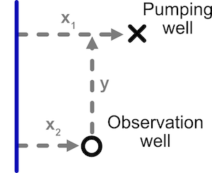

The goal of isw is to enable modeling of stream depletion and aquifer drawdown.
You can install the development version of isw from GitHub with:
# install.packages("remotes")
remotes::install_github("gopalpenny/isw")This is a basic example which shows you how to solve a common problem:
library(isw)
#> Loading required package: expintConsider the following configuration of stream, pumping well, and observation well.

Stream depletion and aquifer drawdown in this scenario can be modeled using the function get_depletion_from_pumping in this package.
library(units)
x1 <- set_units(c(1, 5, 10) * 1e3, "ft")
x2 <- set_units(1e3, "ft")
y <- set_units(1e3, "ft")
D <- set_units(100, "ft")
K <- set_units(0.001, "ft/sec")
t <- set_units(5, "year")
V <- 0.2 # unitless
get_depletion_from_pumping(x1 = x1, x2 = x2, y = y, K = K, D = D, V = V, t = t)
#> Warning in get_aquifer_drawdown_ratio(r = r_w, K = K, D = D, V = V, t = t): ADD
#> CHECK THAT ALPHA IS A UNITS OBJECT
#> Warning in get_aquifer_drawdown_ratio(r = r_wi, K = K, D = D, V = V, t = t):
#> ADD CHECK THAT ALPHA IS A UNITS OBJECT
#> stream_depletion_fraction aquifer_drawdown_ratio
#> 1 0.9365474 -1.2707109 [s/ft^2]
#> 2 0.6905933 -0.5705381 [s/ft^2]
#> 3 0.4259739 -0.2299550 [s/ft^2]The variables can also be specified as named columns of a data.frame or tibble. While either can be used, tibble package is used below because it works more seamlessly with units objects.
library(tibble)
df <- tibble(x1 = x1, x2 = x2, y = y, K = K, D = D, V = V, t = t)
get_depletion_from_pumping(df)
#> Warning in get_aquifer_drawdown_ratio(r = r_w, K = K, D = D, V = V, t = t): ADD
#> CHECK THAT ALPHA IS A UNITS OBJECT
#> Warning in get_aquifer_drawdown_ratio(r = r_wi, K = K, D = D, V = V, t = t):
#> ADD CHECK THAT ALPHA IS A UNITS OBJECT
#> stream_depletion_fraction aquifer_drawdown_ratio
#> 1 0.9365474 -1.2707109 [s/ft^2]
#> 2 0.6905933 -0.5705381 [s/ft^2]
#> 3 0.4259739 -0.2299550 [s/ft^2]For details of this function, check ?get_depletion_from_pumping.
You can find further information about this package, including function help files and tutorials on the package website.